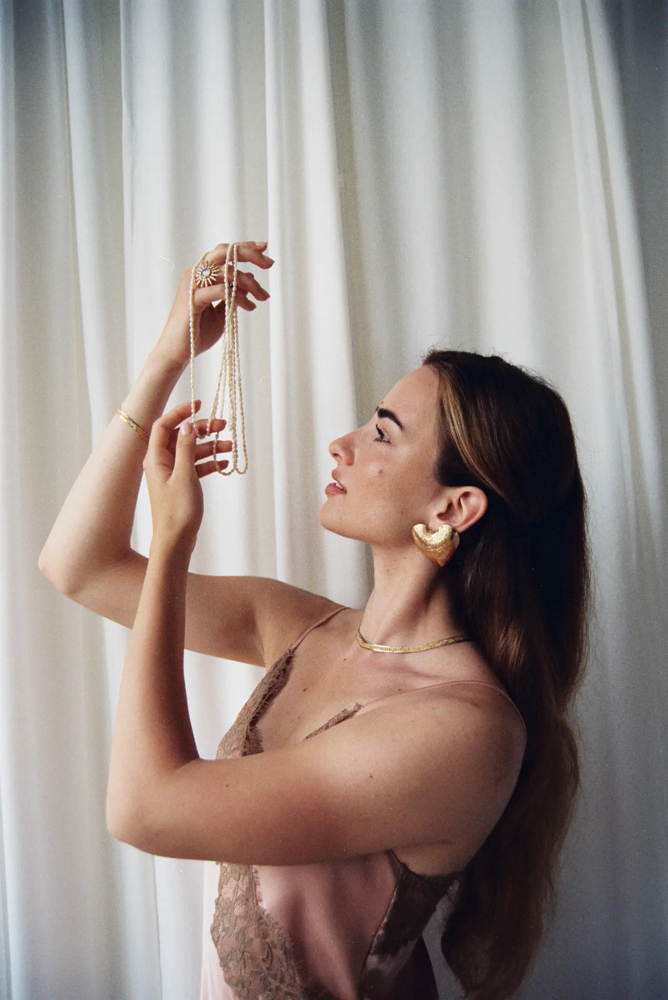
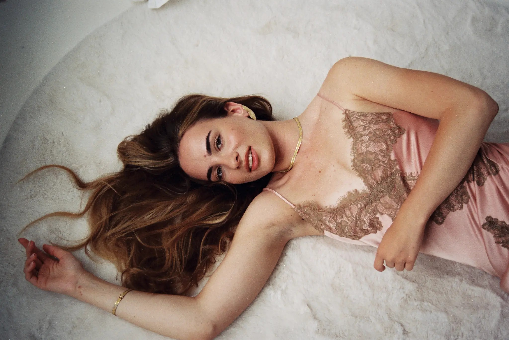
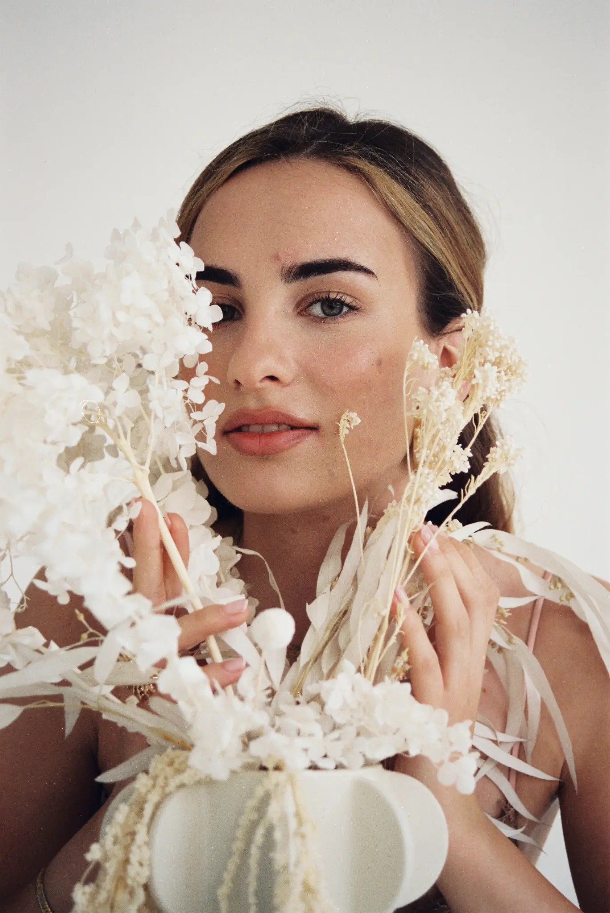

A chronicler of quiet moments. Editorial & portrait photography by grn.35.
„A jelenlétet fényképezem, nem a pózt.” — grn.35
grn.35 egy vizuális napló, amit a fény és a textúrák írnak. A munkáim portrék és editorial sorozatok között mozognak, ott, ahol az anyag — selyem, csipke, bőr, arany — találkozik a természetes fénnyel és egy nagyon csendes nézéssel.
Kizárólag analógon dolgozom — 35mm-en és középformátumon. A kettő különböző ritmust kínál: az egyik gyorsabb és közelibb, a másik lassabb, nagyobb lélegzetvételű.
Meleg bőrtónusok, lágy árnyékok, kis tökéletlenségek. Inkább a jelenlétet fényképezem, mint a pózt. A nevem — grn.35 — egy 35mm-es film tekercsére utal, és arra a fajta türelemre, amit a film megkövetel.
grn.35 is a visual journal written by light and texture. My work moves between portrait and editorial series, where material — silk, lace, skin, gold — meets natural light and a very quiet way of looking.
I work exclusively on film — 35mm and medium format. Each offers a different rhythm: one is faster and closer, the other slower, with a longer breath.
Warm skin tones, soft shadows, small imperfections. I photograph presence rather than pose. The name — grn.35 — is a nod to a roll of 35mm film, and to the kind of patience film demands.

001 / 04
Rózsaszín szatén egy fehér oszlopnak dőlve — az anyag és a kő találkozása.
Pink satin leaning against a white column — material meets stone.

002 / 04
A napfény elnyúlik a szőnyegen, a haj körbeöleli a vállat. Egyetlen képkocka, ami csendet kér.
Sunlight stretches across the rug, hair wraps around the shoulder. One frame that asks for silence.
Roll 09
Frame 12
2026

003 / 04
Szárított virágok, közelről. Az arc és a növény ugyanabból az alapanyagból szövődik.
Dried florals, up close. Face and plant woven from the same material.
Minden képkocka egy filmtekercs egy pillanata — 35mm vagy középformátum. Sorszámozva, dátumozva, egyik sem véletlen.
Each frame is a moment from a roll of film — 35mm or medium format. Numbered, dated, none of them by accident.
Felkérésekért, együttműködésekért és magántervekért — írj egy üzenetet, és visszajelzek egy héten belül.
For commissions, collaborations and private projects — send a note and I will reply within a week.